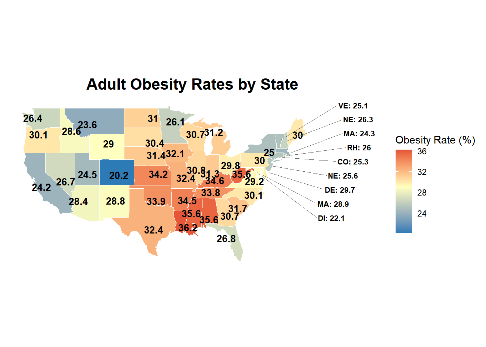
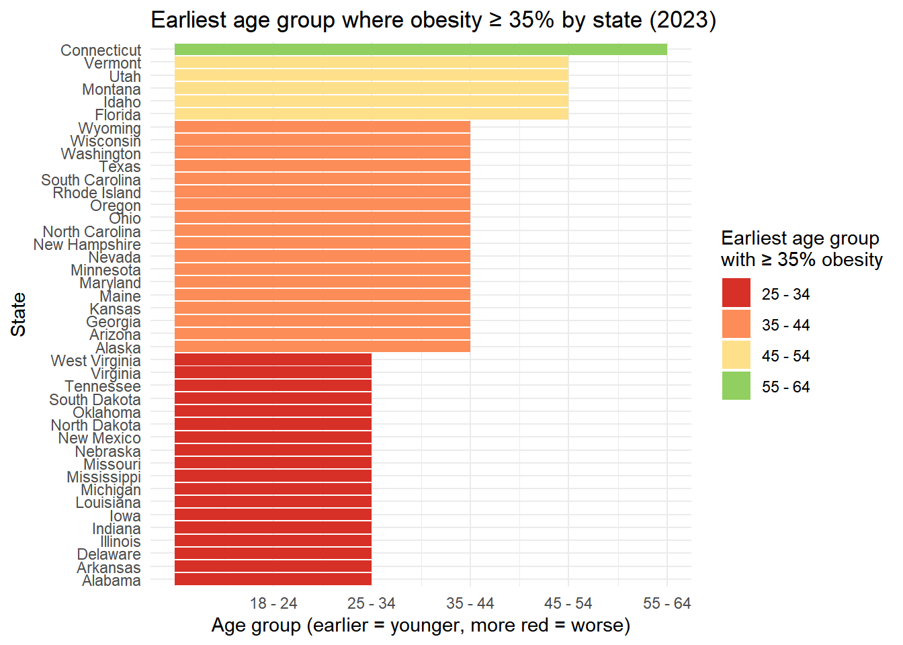

Jin (Benjamin) Kuang, Ryan Ram, Tenchi Chen, Enkel Mezini, Christopher Chan, Siya Aneja
Published
December 18, 2025
Introduction and Motivation
Obesity is still one of the biggest public health challenges in the United States, and its impact goes beyond physical health. Higher obesity rates are tied to conditions like diabetes and heart disease, and they can also be linked to depression and lower quality of life. These trends also increase costs for healthcare systems and employers. At the same time, obesity does not affect everyone equally. Age matters, and where someone lives matters, but the patterns are not always clear from national averages alone.
Our project asks: How do obesity rates change across age groups and regions in the U.S., and which states show unusual patterns? Instead of treating obesity as one national story, we focus on how obesity changes across adulthood and how those trends differ by state. We also look for states that stand out from the typical pattern. This approach helps connect the data to real decisions, like when prevention efforts should start and which places may need more attention.
Importance of Analysis
Viewing obesity through both age and location has clear policy value. If some states reach high obesity levels earlier in adulthood, prevention needs to begin sooner in those places. If other states rise more slowly, the timing and focus of interventions may be different. Spotting states with unusual patterns also matters because it helps separate true public health concerns from changes that may be driven by survey instability or data quirks.
This project also highlights the need to be careful with survey-based data. We use clear visuals and simple comparisons to find patterns that are consistent across states and age groups, while staying cautious about over-interpreting noisy results. Overall, our goal is to pull out insights that are easy to explain and useful for decision-making, without pretending the data can answer every “why” question on its own.
National Obesity By Location: This dataset includes the percent of the state population who are obese.
Nutrition, Physical Activity, and Obesity - Behavioral Risk Factor Surveillance System: This dataset includes data on adult’s diet, physical activity, age, income and other factors.
Relation to Prior Work
Past research shows that obesity is influenced by a mix of behavior, demographics, and social conditions, and that these relationships are not the same for every group. Many studies try to identify which factors predict higher BMI or obesity, but those findings do not always translate into a clear picture of where obesity is most common and when it tends to rise across adulthood. That gap is part of why our project focuses on age and geography, since state-level patterns over the life course can be hidden when we only look at national averages.
For example, a 2009 study on lifestyle, demographics, dietary behavior, and obesity showed that one model does not fit everyone. It emphasized that factors like physical activity and sedentary time, along with demographic differences, can be strongly related to obesity, and that these relationships can vary across subgroups. A second study from 2016 compared different regression approaches and found that many core risk factors stay important across methods, but their impact can look different depending on where someone falls in the BMI range.
Together, this prior work supports two ideas that connect directly to our project. Obesity patterns differ across populations, and the way you summarize the data can change what you notice. Our project builds on this by shifting the focus to state-by-age patterns, looking at how obesity changes across adulthood in different places and identifying states where obesity becomes common earlier or where age trends look meaningfully different from the norm.
Even though it seems that anyone at any age could have obesity, obesity actually is not equally spread across all ages. Some groups of people may be more vulnerable to obesity, while others may be more resistant or resilient to obesity. My contribution to understanding whether specific age groups in the United States are more prone to becoming obese is helpful for government policy makers or healthcare workers to determine the potential factors that caused obesity to be so prevalent in the United States, and therefore possibly prevent it in the near future.
It is apparent from the plot that before 54 years old, the older you are, the higher chance of getting obese. This number starts to drop slightly when people are 55 years old, and greatly when they are 65 years old or older.
From this line chart, it is obvious that 45 - 64 (combining 45 - 54 and 55 - 64) seems to face the highest risk of getting obesity, since they lie above all other groups for each year. Besides, an overall increasing trend for each age group from 2011 to 2024 could be observed, which suggests that obesity for every age group has become worse and more prevalent every year than before.
Both graphs suggest that younger people (18 - 24 years old) are the least vulnerable to obesity, while people who are at 45 - 54 years old are the most vulnerable to obesity.
The broader project asks whether obesity increases with age at the same rate everywhere or whether some states experience much sharper age-related increases, an important distinction because two states can have similar overall obesity levels but very different age profiles. Focusing on the relationship between age and obesity within each state reveals meaningful differences in when obesity risk accelerates across the life course, not just where obesity is most prevalent. For example, California and Illinois exhibit some of the steepest increases in obesity prevalence with age, indicating that obesity rises rapidly as adults move from young adulthood into middle age, while states such as Arizona and Mississippi show relatively flat age gradients, suggesting weaker age effects or consistently high prevalence across adulthood. These patterns are reinforced visually: line plots of obesity prevalence by age midpoint clearly show rapid age-related increases in some states and much flatter trajectories in others, while a choropleth map of slope estimates highlights geographic clustering of steeper and flatter age gradients that is not apparent from national summaries alone. Together, these results demonstrate that examining age–obesity relationships within states provides a more nuanced understanding of how obesity evolves across adulthood and strengthens the project’s broader goal of characterizing geographic and demographic variation in obesity across the United States.
library(ggplot2)library(maps)library(dplyr)library(ggrepel)library(jsonlite)# Get US state boundary datastates_map <-map_data("state")# Standardize state names for mergingobesity_data <- obesity_data %>%mutate(region =tolower(NAME))#| code-fold: true#| output-fold: true#| code-summary: "Geospatial Visualization"#| warning: false#| message: false# Merge obesity data with geographic boundariesmap_obesity <-left_join(states_map, obesity_data, by ="region")# Calculate state centroids for label placementstate_centers <- map_obesity %>%group_by(region) %>%summarise(long =mean(long),lat =mean(lat),Obesity =first(Obesity) )# Identify small northeastern states requiring special label treatmentsmall_states <-c("rhode island", "delaware", "connecticut", "district of columbia", "new jersey", "maryland", "massachusetts", "vermont", "new hampshire")state_centers_large <- state_centers %>%filter(!region %in% small_states)state_centers_small <- state_centers %>%filter(region %in% small_states)ggplot(map_obesity, aes(x = long, y = lat, group = group, fill = Obesity)) +geom_polygon(color ="white", size =0.2) +# Direct centroid labels for larger statesgeom_text(data = state_centers_large, aes(x = long, y = lat, label = Obesity, group =NULL),color ="black", size =3.5, fontface ="bold") +# Offset labels with leader lines for small northeastern statesgeom_text_repel(data = state_centers_small, aes(x = long, y = lat, label =paste0(toupper(substr(region, 1, 2)), ": ", Obesity), group =NULL),color ="black", size =2.8,fontface ="bold",nudge_x =15,direction ="y",segment.color ="grey40",segment.size =0.3,box.padding =0.3,point.padding =0.3,force =1,max.overlaps =20) +scale_fill_gradient2(low ="#2c7bb6", mid ="#ffffbf", high ="#d7191c",midpoint =29, name ="Obesity Rate (%)") +coord_fixed(1.3) +theme_minimal() +theme(axis.text =element_blank(),axis.title =element_blank(),axis.ticks =element_blank(),panel.grid =element_blank(),plot.title =element_text(hjust =0.5, size =16, face ="bold") ) +labs(title ="Adult Obesity Rates by State")

My contribution establishes a geographic baseline for adult obesity in the United States by testing whether state-level obesity rates are regionally clustered or evenly distributed. Using a BRFSS-based dataset from the Lake County, Illinois Open Data Portal, I created a choropleth map that reveals a clear “obesity belt” across the Southeast, where states like Louisiana (36.2%) and Mississippi (35.6%) exceed 35%, while Mountain West and Northeast states like Colorado (25.3%) and Vermont (25.1%) show significantly lower rates. This 14-percentage-point range demonstrates meaningful geographic clustering rather than random distribution. Within the broader project, these findings provide the essential “where” component that contextualizes other team analyses on time trends and demographic patterns. The main limitation is that state-level aggregates mask local variation, suggesting future work should examine finer geographic scales and incorporate factors like physical activity, diet, income, and education to explain regional disparities.
My contribution asks when obesity becomes common in each state. States can have similar overall obesity rates but reach high levels at different ages, which affects when prevention should begin.
I used CDC BRFSS obesity prevalence by state and age group and defined “high obesity” as 35 percent. For each state, I recorded the first age group where obesity reached 35 percent or higher, then summarized results with a state plot and a distribution chart.
Many states first cross 35 percent by ages 25 to 34 or 35 to 44, while fewer cross later and some never reach the threshold. This adds a simple timing perspective to the project, though results are descriptive because BRFSS is self-reported and age groups are broad.
Code
# Chunk: per-state bar plot with red→green color scale# keep only states that ever reach the thresholdplot_data <- state_thresholds %>%filter(!is.na(first_high_age))# define colors from "bad" (early) to "better" (later)age_palette <-c("25 - 34"="#d73027", # red"35 - 44"="#fc8d59", # orange"45 - 54"="#fee08b", # yellow"55 - 64"="#91cf60"# green# add "65+" here if it ever appears:# "65+" = "#1a9850")ggplot( plot_data,aes(x =as.numeric(first_high_age),y =reorder(state, as.numeric(first_high_age)),fill = first_high_age )) +geom_col() +scale_x_continuous(breaks =seq_along(age_levels),labels = age_levels ) +scale_fill_manual(values = age_palette,name ="Earliest age group\nwith ≥ 35% obesity" ) +labs(title =paste0("Earliest age group where obesity ≥ ", threshold,"% by state (", target_year, ")"),x ="Age group (earlier = younger, more red = worse)",y ="State" ) +theme_minimal()

Code
state_counts <- state_thresholds %>%filter(!is.na(first_high_age)) %>%count(first_high_age)total_states <-sum(state_counts$n)state_counts <- state_counts %>%mutate(perc =100* n / total_states,# compact label: count + percent only; age group stays in legendlabel =paste0(n, " (", round(perc), "%)") )age_palette <-c("25 - 34"="#d73027", # red"35 - 44"="#fc8d59", # orange"45 - 54"="#fee08b", # yellow"55 - 64"="#91cf60"# green)ggplot(state_counts,aes(x ="", y = perc, fill = first_high_age)) +geom_col(width =1, color ="white") +coord_polar(theta ="y") +scale_fill_manual(values = age_palette,name ="Earliest age group\nwith ≥ 35% obesity" ) +geom_text(aes(label = label),position =position_stack(vjust =0.5),size =2.7# slightly smaller so the green slice fits better ) +labs(title =paste0("Distribution of states by age group\n","when obesity first exceeds ", threshold,"% (", target_year, ")"),x =NULL,y =NULL ) +theme_void() +theme(legend.position ="right")
Figure: Obesity Trend Comparison – Florida vs West Virginia
My individual analysis focused on understanding why Florida and West Virginia appeared to exhibit “weird” obesity trends in the group’s exploratory visualizations. Florida showed pronounced year-to-year fluctuations, while West Virginia displayed a consistently higher and steeper obesity trajectory compared to most other states. By isolating state-level obesity estimates over time, the analysis demonstrated that Florida’s apparent volatility is largely attributable to survey variability, uneven temporal coverage, and population heterogeneity rather than true population-level shifts. In contrast, West Virginia’s elevated and steadily increasing obesity prevalence was consistent across years, suggesting a genuine structural public health concern rather than a data artifact. This analysis played a critical role in preventing over-interpretation of noisy patterns and helped the group distinguish between real geographic risk and instability arising from survey-based measurement.
This analysis goes beyond national averages by asking how quickly obesity increases with age in each state. National summaries can hide regional differences, so the goal is to see whether the age and obesity relationship looks similar everywhere or varies by location. To do this, the analysis combines a heatmap with a correlation test to capture both visual patterns and the strength of the age and obesity link.
The main visualization is a heatmap showing obesity prevalence across all 50 states and six age groups. Ordering the age groups from 18 to 24 through 65 or older makes the age trend easy to follow within each state. This view helps identify where obesity is most severe and where it rises most sharply as populations age.
Show the code
# 1. Load the readr library library(readr)# 2.read_csv() to download the datacdc_data_tidy <-read_csv("https://data.cdc.gov/api/views/hn4x-zwk7/rows.csv?accessType=DOWNLOAD")str(cdc_data_tidy)library(tidyverse)# -------------------------------------------------------------------------# 1. Data Preparation # -------------------------------------------------------------------------age_data <- cdc_data_tidy %>%filter(Question =="Percent of adults aged 18 years and older who have obesity", StratificationCategory1 =="Age (years)",!is.na(Data_Value), LocationDesc !="National") %>%# Good practice to remove National aggregateselect(LocationDesc, AgeGroup =`Age(years)`, Data_Value)# Define ordered age levelsage_levels <-c("18 - 24", "25 - 34", "35 - 44", "45 - 54", "55 - 64", "65 or older")# Filter and order the dataage_data_processed <- age_data %>%filter(AgeGroup %in% age_levels) %>%mutate(AgeGroup =factor(AgeGroup, levels = age_levels, ordered =TRUE),AgeNumeric =as.numeric(AgeGroup))# -------------------------------------------------------------------------# Slide 1: Heatmap with Smaller Y-Axis Labels# -------------------------------------------------------------------------slide1_plot <-ggplot(age_data_processed, aes(x = AgeGroup, y = LocationDesc, fill = Data_Value)) +geom_tile(color ="white") +scale_fill_viridis_c(option ="magma", name ="Obesity %") +theme_minimal(base_size =10) +labs(title ="Obesity Rate by Age Group Across U.S. States",subtitle ="Prevalence generally increases up to middle age",x ="Age Group",y ="") +# Removed Y label "State" to save spacetheme(axis.text.y =element_text(size =4.5, margin =margin(r =2)),axis.text.x =element_text(size =8),legend.position ="bottom", # Move legend to bottom to give more width to chartpanel.grid =element_blank() )print(slide1_plot)
The heatmap shows a clear and consistent age pattern. In nearly every state, obesity rises from young adulthood into middle age and usually peaks around ages 55 to 64. After that, the 65 and older group often shows a small drop compared with 55 to 64. This suggests the age and obesity relationship is not perfectly linear and may level off later in life, possibly because of health changes in older adults or survival bias.
To back up what the heatmap suggests, the analysis also calculates a Spearman rank correlation for each state. This is a good fit because the age groups are ordered categories, not exact ages. The correlation helps quantify how strongly obesity increases with age in each state and highlights where the relationship is stronger or weaker, suggesting that factors beyond age may matter more in some places.
Show the code
library(tidyverse)# -------------------------------------------------------------------------# Slide 2: Correlation Plot with Smaller Y-Axis Labels# -------------------------------------------------------------------------# Calculate Correlationsstate_correlations <- age_data_processed %>%group_by(LocationDesc) %>%summarize(Correlation =cor(AgeNumeric, Data_Value, method ="spearman")) %>%arrange(desc(Correlation))slide2_plot <-ggplot(state_correlations, aes(x =reorder(LocationDesc, Correlation), y = Correlation)) +geom_col(aes(fill = Correlation >0)) +coord_flip() +scale_fill_manual(values =c("TRUE"="#2E86C1", "FALSE"="#C0392B"), guide ="none") +geom_hline(yintercept =0, linetype ="dashed", color ="gray50") +theme_minimal(base_size =10) +labs(title ="Correlation Between Age and Obesity Rate",subtitle ="Spearman Rank Correlation (Positive = rate increases with age)",x ="", # Removed X label "State" to save spacey ="Correlation Coefficient") +theme(axis.text.y =element_text(size =4.5, margin =margin(r =2)),panel.grid.major.y =element_blank() # Remove horizontal grid lines for cleaner look )# Print to screen to checkprint(slide2_plot)
The correlation results match the heatmap. Nearly every state shows a positive link between age and obesity, meaning obesity tends to rise as people get older. Hawaii is the main exception and has a much flatter pattern. Some states, such as Massachusetts and Minnesota, show stronger correlations, while Hawaii’s weaker relationship may reflect protective lifestyle or environmental factors. Overall, aging matters everywhere, but the strength of the age and obesity relationship depends on the state.
Key Findings
The central finding is that states differ meaningfully in how obesity prevalence changes with age. In some states, obesity rises steadily but moderately across adult age groups. In others, the increase from younger to older adults is much steeper.
When these age patterns are mapped across the United States, a clear geographic pattern emerges. Some regions show consistently steeper age-related increases in obesity, while others have flatter profiles. These differences are not obvious when looking only at overall obesity rates, which highlights the value of focusing on how obesity changes across age groups within each state.
Across nearly all states, obesity prevalence increases from young adulthood into midlife. Adults aged 18 - 24 consistently show the lowest rates, prevalence rises through the 35 - 64 age range, and then levels off or declines slightly at 65 or older. Importantly, states vary in how quickly obesity rises with age. States with steeper age and obesity slopes show a widening gap between younger and older adults, while flatter slopes tend to characterize states where obesity is more uniform across adulthood.
A threshold-based summary adds another view of timing. Some states exceed 35 percent obesity by early adulthood, while others do not reach that level until later age groups or never reach it at all. Many states first exceed the threshold in the 25 - 34 or 35 - 44 age groups, while relatively few first exceed it at older ages. This offers a simple way to compare earlier-onset states to later-onset states.
State trends also show a few notable exceptions. Florida exhibits noticeable year-to-year fluctuations that look like instability rather than a sustained shift. West Virginia remains consistently high with a steady upward trajectory, suggesting a persistently elevated obesity burden compared to other states.
Across the full dataset, average obesity prevalence differs clearly by age group: 22.2% for ages 18 - 24, 31.41% for ages 25 - 34, 35.05% for ages 35 - 44, 36.64% for ages 45 - 54, 36.48% for ages 55 - 64, and 33.56% for ages 65 or older. The pattern increases through midlife, peaks around ages 45 - 54, and then declines at older ages. The time series from 2011 to 2024 reinforces this pattern and also shows an overall upward trend across age groups, suggesting obesity has become more prevalent over time..
Conclusion
This project shows that obesity trends in the United States are shaped by both age and geography. In most states, obesity increases as people move from young adulthood into midlife, then levels off or declines slightly in older age. We also see clear regional differences, with higher levels and steeper increases concentrated in parts of the South and Appalachia.
At the same time, the analysis shows that not every unusual pattern should be treated as a real shift in population health. By combining broad exploration with focused individual analyses, we were able to separate consistent, structural patterns from results that likely reflect survey variability. For example, West Virginia appears to represent a persistently high obesity burden, while Florida’s year-to-year swings are more consistent with instability than a clear trend.
Overall, our findings suggest that effective obesity prevention needs both a national view and a state-level view. Interventions should be informed by patterns that are consistent across age groups and over time, while also accounting for places where results may be sensitive to how the data are collected and summarized.
Limitation
This analysis uses BRFSS data, which relies on self-reported height and weight. Because people may underreport weight or overreport height, obesity prevalence can be underestimated. For that reason, the obesity rates reported here should be treated as estimates rather than exact population values.
BRFSS is also a repeated cross-sectional survey, not a study that follows the same individuals over time. Year-to-year changes reflect different samples and can be influenced by sampling and response variation. As a result, short-term fluctuations, such as those seen in Florida, may reflect survey variability rather than true changes in population health.
Finally, we worked with broad age groups and state-level summaries, and the project remained descriptive. This approach supports clear national comparisons, but it can hide local differences within states and does not explain why patterns occur. Adding factors like income, education, diet, and physical activity in future work would provide stronger explanations for the differences we observed.
Potential Next Steps
Our findings suggest obesity is shaped by both age and location, and that states differ in how early and how sharply obesity rises across adulthood. This supports the need for prevention strategies that are tailored by state and age group rather than relying on a single national approach.
Future work could add behavioral and socioeconomic factors such as physical activity, income, and education to better explain why patterns differ across states. It could also use finer geographic units, such as counties or metro areas, to identify local hot spots that state averages may hide. Finally, these results could be turned into a simple dashboard so public health teams can track changes over time and flag emerging issues.
An additional extension would be to group predictors into micro factors and macro factors to test which scale is more strongly linked to obesity patterns. This could help clarify whether interventions should focus more on individual behaviors or on broader structural conditions.